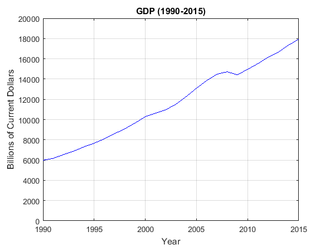
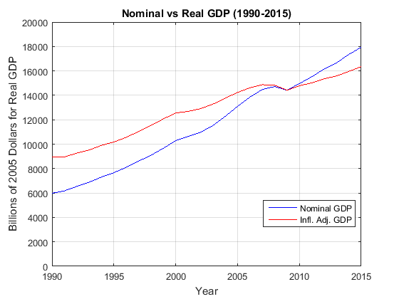
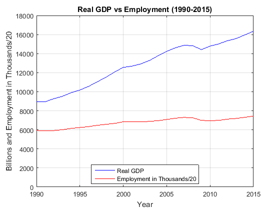
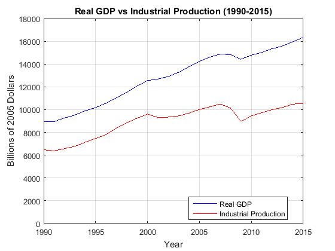
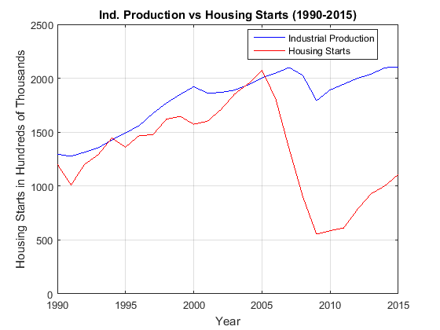
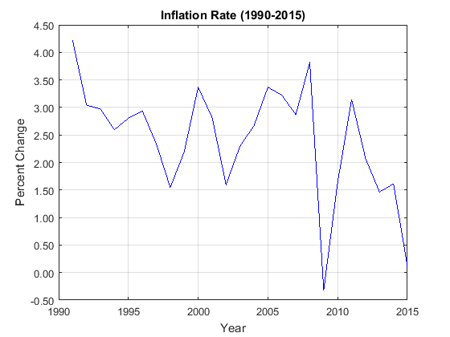

Contents
Load data
clc; clear all; close all; format compact
data_raw = xlsread('Economic Charts 2015.xls','Sheet1');
Retrieve data columns
clc;
data = data_raw;
data([1 2 3],:) = [];
year = data(:,1);
gdp = data(:,3);
gdph = data(:,5);
ip_times_100 = data(:,6);
le_div_20 = data(:,7);
le = data(:,9);
le_lf = data(:,10);
ip = data(:,11);
inflation = data(:,12);
pcu = data(:,13);
ip_times_20 = data(:,14);
hst = data(:,15);
lf = data(:,17);
Chart 1: GDP
close all;
figure
plot(year,gdp,'b')
grid on
ylim([0,20000])
set(gca,'YTickLabel',num2str(get(gca,'YTick')'))
title('GDP (1990-2015)')
xlabel('Year')
ylabel('Billions of Current Dollars')

Chart 2: Nominal vs Real GDP
close all;
figure
plot(year,gdp,'b')
hold on
plot(year,gdph,'r')
grid on
ylim([0,20000])
set(gca,'YTickLabel',num2str(get(gca,'YTick')','%d'))
title('Nominal vs Real GDP (1990-2015)')
xlabel('Year')
ylabel('Billions of 2005 Dollars for Real GDP')
legend('Nominal GDP','Infl. Adj. GDP','Location','best')

Chart 3: Real GDP vs Employment
close all;
figure
plot(year,gdph,'b')
hold on
plot(year,le_div_20,'r')
grid on
ylim([0,18000])
set(gca,'YTickLabel',num2str(get(gca,'YTick')','%d'))
title('Real GDP vs Employment (1990-2015)')
xlabel('Year')
ylabel('Billions and Employment in Thousands/20')
legend('Real GDP','Employment in Thousands/20','Location','best')

Chart 4: Real GDP vs Industrial Production
close all;
figure
plot(year,gdph,'b')
hold on
plot(year,ip_times_100,'r')
grid on
ylim([0,18000])
set(gca,'YTickLabel',num2str(get(gca,'YTick')','%d'))
title('Real GDP vs Industrial Production (1990-2015)')
xlabel('Year')
ylabel('Billions of 2005 Dollars')
legend('Real GDP','Industrial Production','Location','best')

Chart 5: Ind. Production vs Housing Starts
close all;
figure
plot(year,ip_times_20,'b')
hold on
plot(year,hst,'r')
grid on
ylim([0,2500])
set(gca,'YTickLabel',num2str(get(gca,'YTick')','%d'))
title('Ind. Production vs Housing Starts (1990-2015)')
xlabel('Year')
ylabel('Housing Starts in Hundreds of Thousands')
legend('Industrial Production','Housing Starts','Location','best')

Chart 6: Inflation Rate
close all;
figure
plot(year,inflation,'b')
grid on
set(gca,'YTickLabel',sprintf('%.2f\n',get(gca,'YTick')))
title('Inflation Rate (1990-2015)')
xlabel('Year')
ylabel('Percent Change')
